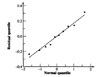

| Previous | Table of Contents | Next |
| TABLE 15.5 Regression Coefficients for RPC Time on UNIX/ARGUS | |||
|---|---|---|---|
| Parameter | Mean | Standard Deviation | Confidence Interval |
| b0 | 36.739 | 3.251 | (31.1676,42.3104) |
| b1 | 0.025 | 0.004 | (0.0192,0.0313) |
| b2 | –14.927 | 3.165 | (–20.3509,–9.5024) |
The model used in this example is based on the assumption that the operating systems have no effect on per-byte processing. This will be true if the processing is identical on the two systems and does not involve the operating systems. Only setup requires operating system calls. If this is in fact true, then the regression coefficients estimated in the joint model of this example are more realistic estimates of the real world. On the other hand, if system programmers can show that the processing follows a different code path in the two systems, then the model of Case Study 14.1 would be more realistic.
A linear regression model can be used only if the relationship between the response and the predictor variables is linear. Therefore, the first step in developing a regression model is to plot a scatter diagram. If the relationship between the response variable y and the predictor variable x appears to be nonlinear or if it is known from other considerations that the relationship has a particular nonlinear form, then we need to use a nonlinear regression model. If the nonlinear function can be converted into a linear form, then the regression can be carried out using the simple or multiple linear regression techniques. Such a regression is called a curvilinear regression.
An example of a curvilinear regression is the exponential relationship
y = bxa
Taking a logarithm of both sides, we get
lny = lnb + alnx
Thus, lnx and lny are linearly related. The values of In b and a can be found by a linear regression of In y on ln x.
Other examples of curvilinear regression functions are
| Nonlinear | Linear | |
|---|---|---|
| y = a + b/x | y = a + b(l/x) | |
| y = l/(a + bx) | (l/y) a + bx | |
| y = x/(a + bx) | (x/y) = a + bx | |
| y = abx | ln y = ln a + (ln b)x | |
| y = a + bxn | y = a + b(xn) | |
In curvilinear regressions, if a predictor variable appears in more than one transformed predictor variable, the transformed variables are likely to be correlated, causing the problem of multicollinearity. Therefore, the analyst should try regression using various possible subsets of the predictor variables to find a subset that gives significant parameters and explains a high percentage of the observed variation.
| TABLE 15.6 Data for Amdahl’s Low Study | ||
|---|---|---|
| System No. | MIPS Used | I/O Rate |
| 1 | 19.63 | 288.60 |
| 2 | 5.45 | 117.30 |
| 3 | 2.63 | 64.60 |
| 4 | 8.24 | 356.40 |
| 5 | 14.00 | 373.20 |
| 6 | 9.87 | 281.10 |
| 7 | 11.27 | 149.60 |
| 8 | 10.13 | 120.60 |
| 9 | 1.01 | 31.10 |
| 10 | 1.26 | 23.70 |
I/O rate = α(MIPS rate)b1
Taking a log of both sides we get:
log(I/O rate) = log α + b1log(MIPS Rate)
The parameters b0 = log α and b1 can be estimated using the simple linear regression technique. The data after log transformation is shown in Table 15.7.
| TABLE 15.7 Transformed Data for Amdahl’s Law Study | ||
|---|---|---|
| Observation No. | x1 | y |
| 1 | 1.293 | 2.460 |
| 2 | 0.736 | 2.069 |
| 3 | 0.420 | 1.810 |
| 4 | 0.916 | 2.552 |
| 5 | 1.146 | 2.572 |
| 6 | 0.994 | 2.449 |
| 7 | 1.052 | 2.175 |
| 8 | 1.006 | 2.081 |
| 9 | 0.004 | 1.493 |
| 10 | 0.100 | 1.375 |
| TABLE 15.8 Regression Coefficients for Amdahl’s Law Study | |||
|---|---|---|---|
| Parameter | Mean | Standard Deviation | Confidence Interval |
| b0 | 1.423 | 0.119 | (1.20,1.64) |
| b1 | 0.888 | 0.135 | (0.64,1.14) |

FIGURE 15.1 Normal quantile-quantile plot for the residuals in Amdahl’s law study.
The parameters and their confidence intervals are shown in Table 15.8. Both coefficients are significant at the 90% confidence level. The regression explains 84% of the variation. Notice that at this confidence level we can accept the hypothesis that the relationship is linear since the confidence interval for b1 includes 1.
A normal quantile-quantile plot of the residuals from the logarithmic model is shown in Figure 15.1. Notice that the errors in log(I/O rate) do seem to be normally distributed.
| Previous | Table of Contents | Next |
){kind=link}
){kind=link}